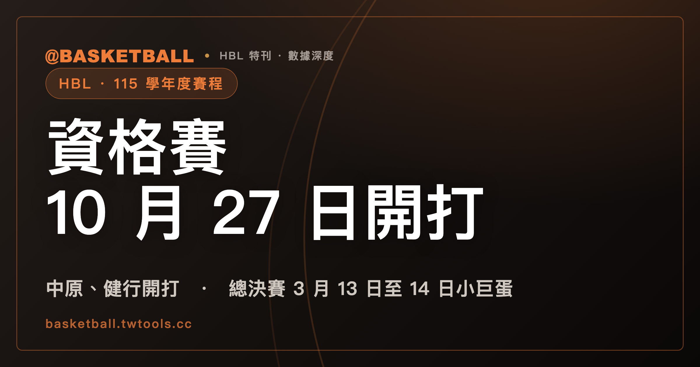

HBL 115 學年度行事曆預定：資格賽 10/27 起在中原、健行，八強跨農曆年，總決賽 3/13–14 小巨蛋
依高中體總官網行事曆預定，HBL 115 學年度甲級資格賽 2026 年 10 月 27 日至 11 月 3 日在中原大學體育館與健行科技大學體育館舉行，實際比賽天數視報名後調整；男女兩組均設資格賽，由上學年度未達甲級前 8 名的隊伍參加，上學年度前 8 名直接進預賽。

HBL・115 學年度｜資格賽・行事曆預定・晉級路徑
115 學年度 HBL 甲級男生組有 35 隊報名，規程把男生組的參賽隊數限在 16 隊；女生組報名 15 隊，上限是 12 隊。本文依據 115 學年度高級中等學校籃球聯賽競賽規程（運動部 2026 年 10 月 7 日備查）、中華民國高級中等學校體育總會（高中體總）官網行事曆，以及 hbl.com.tw 官方賽事系統的報名名單，後兩者都在 2026 年 10 月 13 日讀取。行事曆是官方預定，不是賽程表；日期與場地以高中體總後續公告為準。
讀完之後，你可以判斷自己關心的學校依推算從資格賽還是預賽出發，也可以把行事曆預定的日期抄進自己的行事曆，等 10 月 15 日抽籤會議後回來對照。
男女兩組報名都超過規程上限，兩組均設資格賽
規程第 7 條寫：甲級聯賽參賽隊數以男生組 16 隊、女生組 12 隊為限，報名隊數超出時舉行資格賽。甲級報名在 2026 年 10 月 12 日截止（規程第 10 條），依 hbl.com.tw 官方賽事系統 10 月 13 日的報名名單，兩組的報名隊數都超過上限，所以兩組均設資格賽。
參加資格賽的是上學年度未達甲級前 8 名成績的隊伍
資格賽辦在兩組，不代表所有報名的隊伍都要打。規程第 12 條一（一）寫得很具體：男生組報名超過 16 隊時，參加資格賽的是「上學年度未達甲級前 8 名成績者」；女生組報名超過 12 隊時，條件的寫法相同。預賽的參賽者則由上學年度前 8 名與資格賽錄取的隊伍組成，男生組合計 16 隊，女生組合計 12 隊。
「上學年度前 8 名」是哪幾隊？以下依規程與 10 月 13 日報名名單推算，實際以 10 月 15 日抽籤會議後的官方公告為準。114 學年度打進男生組準決賽與女生組複賽的各 8 隊，都直接進預賽。這 16 隊來自 114 學年度的官方賽果資料，每一隊都在 115 學年度的報名名單內：
| 男生組（114 學年度準決賽 8 隊） | 女生組（114 學年度複賽 8 隊） |
|---|---|
| 光復高中 | 北一女中 |
| 南山高中 | 南山高中 |
| 南湖高中 | 永仁高中 |
| 彰縣成功高中 | 永平高中 |
| 東山高中 | 淡水商工 |
| 東泰高中 | 苗栗高商 |
| 松山高中 | 金甌女中 |
| 能仁家商 | 陽明高中 |
資格賽行事曆預定 10 月 27 日至 11 月 3 日，在中原大學與健行科技大學體育館
高中體總官網行事曆預定，115 學年度甲級資格賽從 2026 年 10 月 27 日（星期二）到 11 月 3 日（星期二），地點是中原大學體育館與健行科技大學體育館。行事曆在這個條目上自註「實際比賽天數，視開放報名後調整之」，所以 8 個日曆日是預定範圍，不是逐日賽程。
資格賽怎麼打，規程第 12 條一（一）寫的是比賽制度「依實際報名情況訂定」。錄取名次則寫「以取得男生組 8 名、女生組 4 名晉級預賽為原則」。參賽數同樣依規程與 10 月 13 日報名名單推算，實際以 10 月 15 日抽籤會議後的官方公告為準。男生組是 35 減 8 等於 27 隊，爭 8 個席位；女生組是 15 減 8 等於 7 隊，爭 4 個席位。8 席與 4 席在規程裡是「為原則」，不是定數。
依規程與 10 月 13 日報名名單推算，實際以 10 月 15 日抽籤會議後的官方公告為準，從資格賽出發的是報名名單扣掉上表同組 8 隊後的隊伍（校名照官方賽事系統報名名單的全名）：
- 男生組 27 隊：中信國際學校財團法人新北市私立中信高級中等學校、嘉義市私立東吳高級工業家事職業學校、國立基隆高級商工職業學校、國立宜蘭高級中學、國立屏東高級中學、國立臺北科技大學附屬桃園農工高級中等學校、國立臺東高級中學、國立馬祖高級中學、屏東縣私立民生高級家事商業職業學校、新北市私立中華商業海事職業學校、新北市私立莊敬高級工業家事職業學校、新北市立三重高級商工職業學校、新北市立泰山高級中學、新北市立錦和高級中學、桃園市立新屋高級中等學校、永平學校財團法人桃園市私立永平工商高級中等學校、治平學校財團法人桃園市治平高級中等學校、臺中市立后綜高級中學、臺中市青年高級中學、臺北市私立新民高級中等學校、臺北市私立滬江高級中學、臺北市立和平高級中學、臺北市立成功高級中學、花蓮縣私立海星高級中學、花蓮縣立體育高級中等學校、高雄市私立高苑高級工商職業學校、高雄市立三民高級家事商業職業學校。
- 女生組 7 隊：中信國際學校財團法人新北市私立中信高級中等學校、佛光山學校財團法人高雄市普門高級中學、嘉義市私立輔仁高級中學、國立新竹高級商業職業學校、新北市私立莊敬高級工業家事職業學校、臺中市立忠明高級中學、臺北市立南湖高級中學。
114 學年度提供了一組對照。官方賽果資料顯示，114 學年度資格賽男生組 29 隊、女生組 8 隊參賽，正好是當年報名的 37 隊、16 隊各減 8；比賽日是 2025 年 10 月 13 日至 17 日共 5 天，男生組在中原大學與健行科技大學兩座場館，女生組在健行科技大學。
hbl.com.tw 官方站 2026 年 9 月 18 日至 28 日的賽事新聞，提過三隊的資格賽經歷：馬祖高中在 114 學年度從資格賽出發，今年依舊從資格賽出發；永平工商在 113、114 學年度連續兩年通過資格賽，進入男生組 16 隊預賽；北科附工在 114 學年度資格賽收官日的「晉級決定戰」中飲恨。「晉級決定戰」是官方站賽事新聞對部分隊伍在資格賽收官日處境的說法。
抽籤會議在 10 月 15 日，籤表與逐日場次截至 10 月 13 日尚未公告
高中體總 2026 年 9 月 23 日公告了「115學年度國民中學籃球聯賽及高級中等學校籃球甲級聯賽資格賽、預賽抽籤會議」：高級中等學校籃球聯賽的場次在 2026 年 10 月 15 日（星期四）上午 10 點，地點是體育聯合辦公大樓 3 樓大禮堂；國中組在 10 月 12 日。公告寫明會中說明賽事賽制與賽程抽籤相關事項。
這是會議日，不是資格賽的開打日。截至 2026 年 10 月 13 日，官方尚未公告高中組資格賽的籤表、分組與逐日場次。hbl.com.tw 賽程系統裡 115 學年度的甲級、乙級四個賽事，也還沒有任何階段。10 月 15 日抽籤會議之後，請以高中體總公告為準。
行事曆預定的六段賽程，從資格賽到總決賽用到 7 座場館
規程第 9 條只寫各階段場地「由本會實地勘查後決定之」，實際場館要看官網行事曆。對照前面兩份推算名單，就能大致判斷關心的學校從哪一段出發，再沿下表往後查行事曆預定的日期與場地；最後一欄是 114 學年度的實際日期。
| 階段 | 規程隊數與晉級 | 行事曆預定日期 | 行事曆預定場地 | 114 學年度實際日期 |
|---|---|---|---|---|
| 資格賽 | 報名超額時舉行；以男生組 8 名、女生組 4 名晉級預賽為原則 | 2026-10-27 至 11-03（實際比賽天數視開放報名後調整） | 中原大學體育館、健行科技大學體育館 | 2025-10-13 至 10-17 |
| 預賽 | 男生組 16 隊取 12 隊；女生組 12 隊取 8 隊 | 男生組 2026-11-20 至 11-23；女生組第一階段 2026-11-24 至 11-26 | 高雄市鳳山體育館 | 男生組 2025-11-29 至 12-02；女生組 2025-12-18 至 12-24 |
| 男生組複賽、女生組預賽第二階段 | 男生組 12 隊取 8 隊；女生組預賽取 8 隊 | 男生組複賽 2026-12-14 至 12-20；女生組第二階段 2026-12-19 至 12-26 | 新竹縣立體育館 | 男生組複賽 2025-12-23 至 12-29 |
| 女生組複賽暨男生組準決賽，第一階段 | 女生組複賽 8 隊取 4 隊；男生組準決賽 8 隊取 4 隊 | 2027-01-12 至 01-17 | 新北市板橋體育館 | 2026-02-05 至 02-12（新莊體育館、板橋體育館） |
| 女生組複賽暨男生組準決賽，第二階段 | 同上 | 2027-02-18 至 02-21 | 國立臺灣大學綜合體育館 3 樓 | 同上列 |
| 總決賽 | 男女各 4 隊，淘汰排名賽 | 2027-03-13 至 03-14 | 臺北小巨蛋 | 2026-03-21 至 03-22 |
表裡的名額來自規程第 12 條。準決賽的條文只有男生組；女生組複賽 8 隊單循環，1 至 4 名直接進總決賽。五個階段在 114 學年度規程裡怎麼銜接，見 HBL 甲級賽制五道關卡。循環賽的名次積分與同分判定，114 學年度規程的寫法見 HBL 分組循環賽積分相等，名次先看對戰勝負。
和 114 學年度相比，行事曆預定的男生組預賽早 9 天開始，總決賽提前 8 天；各階段的隊數（16、12、8、4）與 114 學年度相同。
八強賽跨農曆年、第二階段改到台大：官方站新聞轉述的學測衝突與場館整修
hbl.com.tw 官方站 2026 年 10 月 1 日刊出的賽事新聞所稱的八強戰，就是行事曆上「女生組複賽暨男生組準決賽」的兩個階段：依行事曆預定，第一階段在板橋體育館，過完農曆年，第二階段到台大綜合體育館決定四強席位。
同一篇新聞轉述高中體總秘書長朱彩鳳的說法，講的是兩件事。第一件是跨年：原本設定的八強時間與大學學測衝突，所有時間與場地都得「砍掉重練」，才出現跨年。第二件是場館：時間改定後，原本只打算在板橋體育館進行，但場館要整修，為了避免球員在有油漆味的場館比賽，才轉往台大（依行事曆，第二階段在台大）。
決定八強席位的 12 月階段，行事曆預定首度移到新竹縣立體育館
hbl.com.tw 官方站 2026 年 9 月 17 日的賽事新聞寫到，男、女各 12 隊爭奪八強門票的階段，今年底將在新竹縣立體育館舉行；前兩個學年度（113、114）在屏東，更早熟悉的場地是高雄。官方站 10 月 1 日的賽事新聞也說，這個階段將首度造訪新竹縣立體育館。
對照規程的階段名稱，這個階段分屬兩組的不同關卡：男生組是複賽，女生組是預賽第二階段，兩組都是 12 隊取 8 隊。兩組在新竹縣立體育館先後登場，12 月 19 日、20 日兩天日期重疊。
轉播：官方公告列緯來電視網與愛爾達體育家族，Hami Video 續播與否未見公告
高中體總 2026 年 10 月 7 日張貼的開賽記者會公告寫，115 學年度四大聯賽將攜手緯來電視網、愛爾達體育家族提供賽事轉播，並註明「各項聯賽詳細轉播資訊請參閱本會官網各階段公告」。緯來電視網與高中體總另在 2026 年 7 月 30 日完成 115 至 118 學年度的合作簽約（聯合新聞網報導），由緯來體育家族及緯來電視網 APP 提供電視與網路轉播。
114 學年度的新媒體轉播是中華電信 Hami Video 的 HBLTV；115 學年度的官方公告沒有列出 Hami Video，是否續播截至 2026 年 10 月 13 日未見公告。
衛冕軍松山高中與陽明高中，依推算都從預賽出發
高中體總的開賽記者會公告回顧上學年度：HBL 松山高中男籃完成二連霸，陽明高中女籃拿下隊史首冠。114 學年度冠軍戰在 2026 年 3 月 22 日舉行，男生組松山高中以 87 比 71 擊敗南湖高中，女生組陽明高中以 61 比 53 擊敗北一女中。多家媒體報導松山高中今年挑戰三連霸。
兩隊都在前文推算直接進預賽的名單裡。114 學年度的戰報與歷屆冠軍榜，見 HBL 甲級聯賽指南。
常見問題
115 學年度 HBL 甲級資格賽什麼時候開打？
依高中體總官網行事曆預定，115 學年度甲級資格賽從 2026 年 10 月 27 日到 11 月 3 日，在中原大學體育館與健行科技大學體育館舉行，實際天數視報名後調整。見「資格賽行事曆預定 10 月 27 日至 11 月 3 日」一節。
115 學年度哪些學校要打甲級資格賽？
依 115 學年度競賽規程第 12 條，資格賽由「上學年度未達甲級前 8 名成績者」參加，男生組、女生組各自在報名超過 16 隊、12 隊時舉行。兩組均設資格賽，不是所有報名的隊伍都要打；依推算直接進預賽的名單與從資格賽出發的名單，分別見「參加資格賽的是上學年度未達甲級前 8 名成績的隊伍」與「資格賽行事曆預定 10 月 27 日至 11 月 3 日」兩節。
115 學年度 HBL 甲級女生組也要打準決賽嗎？
依 115 學年度規程第 12 條，準決賽的條文只有男生組，8 隊單循環，1 至 4 名進總決賽；女生組複賽 8 隊單循環，1 至 4 名直接進總決賽。行事曆把「女生組複賽暨男生組準決賽」合併成一個條目，兩組的日期與場地相同。見「行事曆預定的六段賽程」一節。
115 學年度 HBL 甲級總決賽在哪裡？
依高中體總官網行事曆預定，115 學年度甲級總決賽在 2027 年 3 月 13 日（星期六）與 14 日（星期日），於臺北小巨蛋舉行；規程寫總決賽男女各 4 隊，採淘汰排名賽。114 學年度總決賽是 2026 年 3 月 21 至 22 日，同在臺北小巨蛋。
115 學年度甲級資格賽的籤表公布了嗎？
截至 2026 年 10 月 13 日，官方尚未公告高中組資格賽的籤表、分組與逐日場次。高中組的抽籤會議是 2026 年 10 月 15 日（星期四）上午 10 點；會議之後，請以高中體總公告為準。見「抽籤會議在 10 月 15 日」一節。
資料來源
- 115 學年度高級中等學校籃球聯賽競賽規程（運動部 2026 年 10 月 7 日備查）：第 7 條、第 9 條、第 10 條、第 12 條相關條文，取自高中體總備查版與 hbl.com.tw 競賽規程頁，2026 年 10 月 13 日讀取。
- 中華民國高級中等學校體育總會官網行事曆（2026 年 10 月 13 日讀取）：2026 年 10 月至 2027 年 3 月的甲級籃球條目。
- hbl.com.tw 官方賽事系統（2026 年 10 月 13 日）：115 學年度報名名單、114 學年度各階段賽果資料。
- 高中體總公告：「115學年度國民中學籃球聯賽及高級中等學校籃球甲級聯賽資格賽、預賽抽籤會議」（2026 年 9 月 23 日）、「115學年度中等學校學生運動聯賽開賽記者會」（2026 年 10 月 7 日）。
- hbl.com.tw 賽事新聞：2026 年 9 月 17 日、9 月 18 日、9 月 22 日、9 月 28 日、10 月 1 日（署名 HJ Sports／孫傳賢）。
- 聯合新聞網，2026 年 7 月 30 日：緯來電視網與高中體總簽約報導；NOWnews、自由時報、緯來新聞網，2026 年 10 月 6 日：開賽記者會報導。